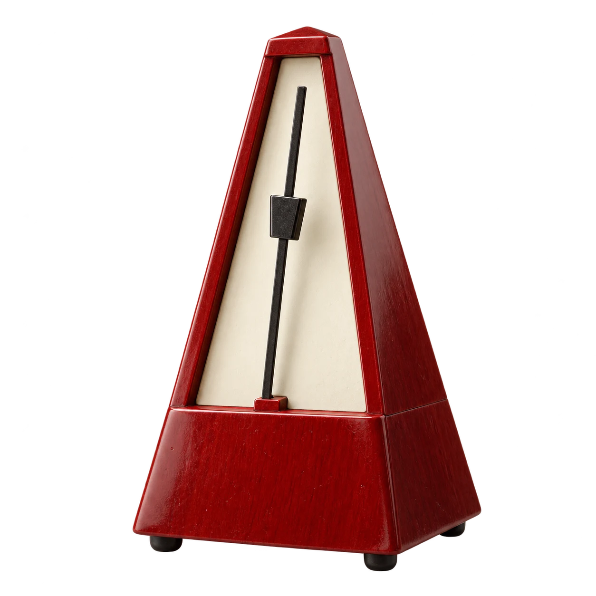

Make room for one thing.
A little time, entirely yours. Where would you like to begin?
Find your rhythm
00:00 remaining25minutes of one good thingYOUR 25 MINUTE SESSION
One task.
Your pace.

Tempo is keeping time
100%
A little time, entirely yours. Where would you like to begin?
Find your rhythm
